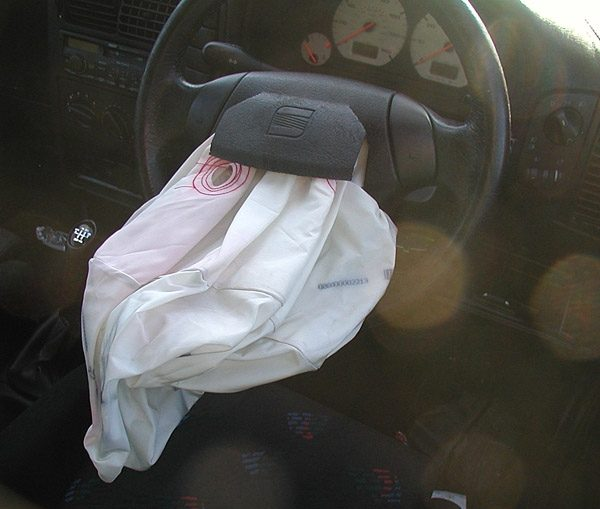

Poradňa autoservisu autoZ
Svieti kontrolka airbagu
Kontrolka so sediacou postavou a kruhom pred ňou (často s nápisom SRS alebo AIRBAG) znamená, že systém airbagov zistil chybu. Auto ide normálne, ale airbagy a predpínače bezpečnostných pásov nemusia pri nehode zafungovať.


Môžem jazdiť?
Berte to ako vážnu chybu bezpečnostného systému. Auto síce ide, ale pri nehode nemusí vystreliť airbag ani dotiahnuť bezpečnostný pás. Jazdite len nevyhnutne, opatrne a dajte systém skontrolovať, nečakajte s tým. Nevozte dieťa na prednom sedadle.
Často ide o uvoľnený konektor pod sedadlom. Konektory airbagov sami nerozpájajte ani nezapájajte – pri neodbornom zásahu hrozí nechcené odpálenie airbagu. Chybu aj tak treba prečítať a vymazať diagnostikou.
Čo kontrolka airbagu znamená
Systém pasívnej bezpečnosti (SRS) tvoria airbagy, predpínače bezpečnostných pásov, snímače nárazu a riadiaca jednotka. Jednotka po každom zapnutí zapaľovania a aj počas jazdy kontroluje, či sú všetky obvody v poriadku. Pri zapnutí zapaľovania sa kontrolka na chvíľu rozsvieti a potom má zhasnúť.
Keď jednotka zistí chybu – napríklad prerušený obvod, nesprávny odpor alebo nízke napätie – uloží chybový kód a rozsvieti kontrolku. Podľa druhu chyby môže byť vypnutý jeden airbag alebo celý systém. Z kontrolky sa to zistiť nedá. Chyba pri airbagoch zvyčajne ostáva v pamäti, kým sa po oprave nevymaže diagnostikou.
Ak kontrolka po zapnutí zapaľovania nezasvieti vôbec, je to tiež dôvod na kontrolu.
Najčastejšie príčiny
| Príčina | Čo si môžete všimnúť | Poznámka |
|---|---|---|
| Konektory pod prednými sedadlami (airbag v sedadle, predpínač pásu, snímač obsadenia) | kontrolka po posunutí sedadla, čistení alebo vybratí sedadla | nerozpájať sami, chybu vymazať diagnostikou |
| Spirálový kábel pod volantom | nefunguje klaksón alebo tlačidlá na volante | časté pri starších autách |
| Predpínač alebo zámok bezpečnostného pásu | chyba týkajúca sa konkrétneho pásu | overuje sa diagnostikou |
| Snímač obsadenia sedadla spolujazdca | kontrolka pri sedení spolujazdca, hlásenie o vypnutom airbagu | podľa výbavy auta |
| Nízke napätie batérie | kontrolka po štarte so slabou batériou | najprv overiť batériu |
| Po nehode alebo po vystrelení airbagu | kontrolka svieti po nehode | systém treba opraviť a vymeniť použité diely |
Prehľad je orientačný. Ktorý obvod je chybný, ukáže až diagnostika.
Čo urobiť, keď svieti kontrolka airbagu
- Spomeňte si, čo sa s autom robilo naposledy – posúvanie alebo vyberanie sedadiel, čistenie interiéru, výmena batérie, oprava pod volantom. Pomôže to pri hľadaní príčiny.
- Pozrite, či fungujú klaksón a tlačidlá na volante.
- Na konektory airbagov, pásy ani volant nesiahajte – zásahy do systému airbagov patria do servisu.
- Jazdite len nevyhnutne a opatrne, nevozte dieťa na prednom sedadle.
- Dajte prečítať chybový kód. Podľa neho sa nájde chybný obvod, opraví sa a chyba sa vymaže.
Prečo kontrolku airbagu neignorovať
Airbag a predpínač pásu výrazne znižujú následky nehody. Keď svieti kontrolka, systém nemusí pri náraze zafungovať a vy sa to dozviete až vtedy, keď ho potrebujete. Svietiaca kontrolka airbagu býva aj predmetom technickej kontroly.
Prakticky ide o elektrickú chybu, ktorú treba nájsť meraním a diagnostikou. Súvisiace: kontrolka motora. Všetky kontrolky podľa farby nájdete na hlavnej stránke svietikontrolka.sk.
Časté otázky
Môžem jazdiť, keď svieti kontrolka airbagu?
Auto ide, ale airbagy a predpínače pásov nemusia pri nehode zafungovať. Jazdite len nevyhnutne a opatrne, nevozte dieťa na prednom sedadle a dajte systém skontrolovať.
Prečo svieti airbag po posunutí sedadla?
Pod prednými sedadlami sú konektory airbagov, predpínačov pásov a snímačov. Posunutím sedadla alebo čistením sa môžu uvoľniť alebo poškodiť. Konektory sami nerozpájajte, chybu treba overiť a vymazať diagnostikou.
Zhasne kontrolka airbagu sama?
Väčšinou nie. Chyba v systéme airbagov ostáva uložená, kým sa po oprave nevymaže diagnostikou.
Prečo nefunguje klaksón a svieti airbag?
Často je príčinou spirálový kábel pod volantom, cez ktorý idú vodiče k airbagu aj k tlačidlám na volante. Overuje sa diagnostikou.
Kde v Trenčíne skontrolujú airbag?
V autoservise autoZ na ulici gen. M. R. Štefánika 6670/19 v Trenčíne, pri Kauflande. Objednať sa môžete na 0910 606 999 alebo na autoz.sk/rezervacia.
Svieti vám kontrolka airbagu? Prečítame chybu.
Diagnostiku systému airbagov robíme v autoservise autoZ v Trenčíne. Zavolajte, pošlite fotku palubnej dosky na WhatsApp alebo sa objednajte online.
autoZ – autoservis Zelman · gen. M. R. Štefánika 6670/19, 911 01 Trenčín (pri Kauflande) · Po–Pi 8:00–16:30 · Diagnostika auta Trenčín · Príprava na STK Trenčín
← Všetky kontrolky